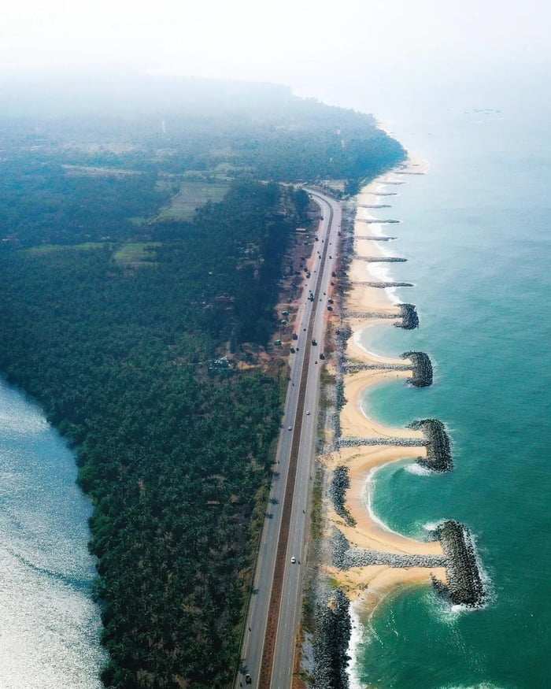

Services
Develop a responsive web page layout utilizing CSS Grid and Flexbox to ensure seamless compatibility across multiple device screen sizes. The design should incorporate a structured layout with a header, navigation bar, main content section, and footer.
Develop a responsive web page layout utilizing CSS Grid and Flexbox to ensure seamless compatibility across multiple device screen sizes. The design should incorporate a structured layout with a header, navigation bar, main content section, and footer.
Develop a responsive web page layout utilizing CSS Grid and Flexbox to ensure seamless compatibility across multiple device screen sizes. The design should incorporate a structured layout with a header, navigation bar, main content section, and footer.
articles

Maravanthe Beach, located in Karnataka, India, is a unique and picturesque destination where the Arabian Sea runs parallel to the Souparnika River, separated by a narrow stretch of land. This scenic beauty offers a tranquil environment with golden sands and clear blue waters, making it perfect for a peaceful retreat. The beach is renowned for its stunning sunsets and the mesmerizing view of the mountains in the backdrop.
Kodi Beach is a pristine coastal haven located in Karnataka, India, known for its serene and unspoiled environment. The beach features golden sands and clear blue waters, making it an ideal spot for relaxation and scenic walks. Flanked by lush greenery and dotted with traditional fishing boats, Kodi Beach offers a glimpse into local life and culture. It is less crowded compared to other tourist spots, providing a peaceful retreat. The stunning sunsets and gentle waves make it a favorite for nature lovers and photographers.
Gangolli Beach, nestled in the coastal town of Gangolli in Karnataka, India, is a serene and picturesque destination. The beach is known for its pristine sands and tranquil waters, offering a peaceful retreat for visitors. Lined with swaying palm trees, it provides a perfect setting for relaxing strolls and enjoying the natural beauty. The fishing activities and colorful boats dotting the shore add a vibrant touch to the scenic landscape. Sunsets at Gangolli Beach are particularly mesmerizing, painting the sky with hues of orange and pink.